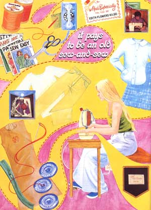
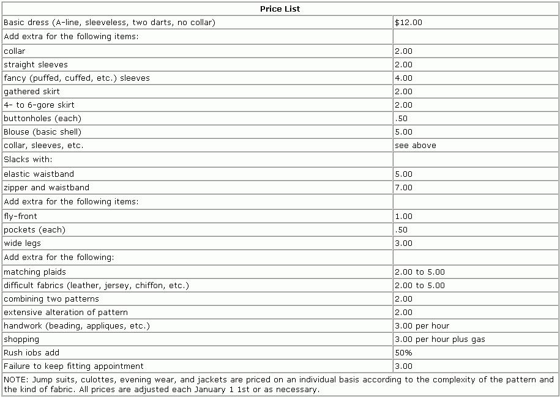

Have you ever wished you could find a home business that requires only a modest initial investment, entails little or no overhead, and propagates itself entirely by word of mouth? If so, maybe you should do what I did: Start a home sewing business.
A few years ago-when I began to look around for ways to fortify my then-sagging bank account-I decided that I simply would not take a job outside my home. I had a four-year-old daughter, and I didn't want to farm her out to a baby-sitter during the day while I faced the "work world". After investigating several alternatives, I finally decided to set up my own home sewing and custom dressmaking business.
Mind you, at the time I was hardly what you could call an experienced seamstress. (I had taught myself to sew over a three-year period, progressing from diapershirts, to dresses for myself, to jackets for my husband.) My experience was-in a word-limited ... but I figured that if I proceeded slowly, cut carefully, and followed the pattern instructions religiously, I could convince paying customers that I knew what I was doing. So I forged ahead.
As I began to plan my "sew for dough" venture, I took inventory of my tools and supplies to see if I had everything I'd need to do any and all kinds of sewing ... and right away, I made my first mistake: I bought a very expensive sewing machine with a multitude of gadgets and dials. (Little did I know then that I would never be called upon to use all those fancy accessories. A simple machine with just the basic stitches-straight, stretch, and zigzag-and a buttonhole-maker would have served my purposes well. and saved me a big chunk of money.)
Fortunately, we had a spare bedroom in our house and I was able to appropriate it for my "sewing headquarters". (Although it's not essential that you have a separate room for sewing, it certainly is a convenience. Customers feel much more comfortable dressing and undressing in a part of the house that's away from the family traffic pattern.) An old bookcase became my pattern file, and my husband installed long shelves on one wall to take care of fabric storage. (A fabric storage area is essential, since some customers bring in as many as 10 or 12 patterns and fabrics at one time.)
I also bought a file box (with index cards) to keep track of my customers, and a full-length mirror ... and I had the phone company install a wall phone with an extra-long cord. (I wanted to be able to keep on sewing while my gabby friends discussed their solutions to the world's problems.)
As soon as I'd organized my equipment and readied my sewing room, I went ahead and ordered some printed business cards and-when they came-passed them out to my friends. Then I waited ... and waited ... and waited. Nothing happened.
For a while, all I could do was stare gloomily at my empty shelves and blank file cards and wonder to myself, "Where could I have gone wrong?" Then it came to me: I suddenly realized that all my friends were talented seamstresses in their own right, and that I would have to obtain customers from outside my circle of friends.
At this point, I decided to invest $3.00 in an ad in a local paper. My plan was to run the ad for five days, then renew the notice again and again until I'd acquired plenty of customers ... but as things turned out, those first five days of advertising were all I ever needed!
I received five phone calls from that ad, one of which was almost too good to be true. A local fabric shop needed someone to make model garments for them and wondered if I might be interested. Needless to say, I rushed right over! It was the perfect assignment: Making model garments is the easiest kind of sewing to do, because the finished clothes don't have to fit an individual. The item is just cut out exactly by the pattern and sewn up without any adjustments, bastings, or fittings.
The nice part of the deal was that the store manager offered to give my name to interested customers. So my model garments served also as a good form of advertising.
As people began to call and ask me to sew for them, I started to think about how much I should charge for my work. Since I couldn't always look at a pattern and tell how long it'd take me to make the garment, I finally decided to charge a fixed amount for a basic dress (or blouse) and then add to the price according to the number and complexity of the desired "options". (See the Price List that accompanies this article.)
With time, I learned also to charge extra when working with plaids, stripes, slippery fabrics, or velvet, due to the extra labor involved.
I tried to work out my prices so that I'd average about $3.00 an hour. In the beginning, though, my speed was not always consistent, and I had to learn plenty of sewing shortcuts before I could really depend on making $3.00 an hour.
For handwork of any kind, I charge a flat hourly rate of $3.00, unless it's a rush job ... in which case I charge 50% extra. (For me, anything in less than two weeks is a rush job.)
Wedding gowns deserve special consideration. I set the price quite high on these because they're such a pain. Oh, the sewing is easy enough ... it's having to deal with those moonstruck brides that drives me up the wall! Young brides have so many showers and luncheons to attend and so much shopping to do, it's virtually impossible to tie one down long enough to arrange a fitting.
Then too, of course, wedding plans do occasionally fall through ... which is why I require a $35 deposit up front on all wedding dresses. If worst comes to worst, I need something to show for all that time and work besides a half-finished size 8 that I can't even wear to the P.T.A. meeting!
Early on, as I acquired more and more customers, I began to get requests to do alterations. At first, I was reluctant to take on these assignments ... but I soon realized that such work could be very profitable (more so, in fact, than the sewing jobs I'd been doing).
The fact is that alterations bring in more money in less time than basic garment-sewing. To give you an idea of what I'm talking about, I charge a flat $3.00 to adjust the waist size of a pair of trousers. (I determined my alteration prices by calling some of the local laundries and finding out what they charged for similar jobs.) All this involves is removing the center back belt loop from the pants, taking in or letting out the center back seam, and reattaching the belt loop ... a 15-minute procedure. Figure it out for yourself: That's $12 an hour.
Yes, I do find it somewhat boring to work on a garment someone else made ... but in the interest of profits, I can force myself to overlook a little boredom!
When I first started sewing for others, I always required my customers to provide everything (not only fabrics and patterns, but threads, fasteners, etc.) necessary to make a garment. The only trouble was, I had forgetful customers. No sooner would I sit down to sew than I'd discover that one of my patrons had neglected to bring a spool of red thread, say, or a zipper.
I used to handle this situation by putting the work aside, calling the customer, and finding something else to do until that particular client brought me the missing item(s). Then I got smart: After a little searching, I found a mail-order company that sold notions at unbelievably low prices (zippers for 250, and so on) ... and right away, I ordered large quantities of thread, buttons, etc., to keep on hand for my forgetful clients. From that point on, whenever someone forgot to bring something, I'd supply the item myself, charge full retail price for it, and make a little extra profit.
Everyone liked my new system so well that before long, the majority of my customers chose to bring me only fabric and patterns and let me supply the notions. I increased my profit quite a bit this way, and at the same time solved the problem of my sometimes having to wait for a client to bring me essential (but missing) supplies.
Have you ever stopped to wonder why people patronize a dressmaker or seamstress in the first place? I've found that most of the people who go to a dressmaker do so because they're unable-for one reason or another-to buy ready-made clothing. Some of my customers, for instance, are handicapped and must have their wardrobe custom-made. (Note: In my experience, local groups that work with the handicapped are thrilled to discover competent seamstresses and will gladly provide a steady stream of clients. This may be something for you to look into when you're just getting started and need customers.)
Then too, some people must have clothes custommade because of a weight problem. My steadiest repeat customers, in fact, fall into one of two categories: [1] very, very overweight ladies, and [2] extremely skinny teenagers. These two types-as you'd expect-find it virtually impossible to buy ready-made clothes that fit well and are stylish.
I confess it came as a surprise to me to learn that many women consider it a sign of status to wear custom-made clothing ... even if that clothing was made by a totally unheard-of dressmaker (i.e., me). Chances are, you'll encounter your share of "snob appeal" customers, too.
To satisfy my cachet- conscious patrons, I ordered a quantity of sewin labels imprinted with "Made especially for you by Edith Kilgo" to add to my finished garments. Although these labels cost me only a few pennies each, they were a big hit with my customers. (One lady told me of attending some society function where she took off her jacket and hung it up in such a way that my label could not pass unnoticed!)
Around status-hungry customers I always call myself a "custom dressmaker", by the way, rather than a seamstress. Why not? They're paying for the prestige as well as the stitchery.
Home sewing can be a very personal business ... so much so that it would probably be an unpleasant occupation for anyone who feels ill at ease around strangers. Quite often, for instance, customers expect their seamstress also to be their confidant. (Some of the stories I've listened to are unbelievable!) I just listen quietly and remember never to discuss one patron's problems with another.
Often, too, customers will come to you for advice about clothing, even before they've bought their patterns and fabrics. Here, it helps to have a big pattern book like the ones the fabric stores use. But that doesn't have to cost you an arm or a leg ... or anything. The local fabric shop I sew for is pleased to let me have its old pattern book at the end of each month, when it receives a new one. (This has been a tremendous help, since it enables me to sit down with a client and- in the privacy of my home- confidentially discuss exactly which styles suit him or her the best.)
Many people cannot look at a pattern and visualize it as a finished garment. Without guidance, these folks might buy fabrics and patterns that are totally unsuited for each other (and for the intended wearer). When it comes to providing this guidance, I just try to be honest. If I feel that my size 24-1/2 customer will not be pleased with the outcome if she has me make that halter-topped mini-dress, I tell her so. (Let's face it: No matter how good a seamstress you are, a customer will never be happy with a garment that's not right for her body type.) My policy is to be outspoken and deal with the problem honestly, before a patron spends her money on something in which she's bound to be disappointed.
Many people-when they think of dressmakingthink of the glamour associated with creating beautiful evening wear and wedding gowns. All is not glamour in the sewing biz, however. In fact-although I do occasionally get calls to make something glamorous--I spend most of my time doing odd (and unglamorous) jobs.
One of my busiest times of the year, for instance, is August. This is the time all cheerleaders and school choral groups have to buy uniforms. Usually all it takes is one frantic teenager with a non-sewing mother who wants me to make her daughter a uniform, and I'm soon stampeded by 10 or 15 more frantic teenagers hollering " Me too! Me too! " (Some schools even maintain a list of seamstresses to help non-sewing mothers cope with uniform time.)
One advantage of uniform-making is that I'm sometimes able to stack up fabric and cut more than one garment at a time. (This-of courseonly works if no fitting adjustments are to be made. Fortunately, youngsters-pre-teens in particular-are fairly cooperative in this respect.) With uniforms, I can also save time, frequently, by not having to change colors of thread on my machine. However, I do lose some time by having to double-sew all stress points. (Cheerleaders do a lot of leaping, and I don't want anyone to be embarrassed by a seam that gives way at the wrong moment!)
When home sewing is mentioned, most people automatically assume that that means making clothes only for women. This needn't be so. If a seamstress is ambitious and doesn't blush easily, she can sew for men, too. Men have articles of clothing that need repairs and alterations, and guys enjoy custom-made clothing every bit as much as gals.
As a matter of policy, I usually ask my male customers' wives to take their measurements for me ... and I require that the wives come with their husbands to all fittings.
The most difficult thing you'll have to learn as a sewat-home seamstress is how to say "no". Your continued sanity depends on your willingness to learn this word quickly and dispense it often.
Somebody is always asking for rush work and giving me a tear-jerking reason why I just have to drop everything and make her a dress in 24 hours. Anyone who can't say NO in such a case (and believe me, you'll encounter this situation many times) should at least learn to charge extra for rush jobs. If I decide out of the goodness of my heart (and the softness of my head) to give in to some sad plea and make an outfit in 24 hours, you can bet I charge heavily for it. When I lose a night's sleep, somebody has to pay!
One fringe benefit of having your own home sewing business is that you pick up quite a bit of free material. Most of my customers buy too much fabric for the garment they want made ... too much, at least, the way I make things. You see, I've learned to place the pattern pieces close enough together so that I'm always left with a big piece of "free" material after cutting out any garment. With these leftover goodies, I'm able to clothe my daughter and myself practically for free.
Odds and ends that are too small to be made into clothes can, of course, be used to make dolls, potholders, appliques, and fabric flowers (either to keep or to give away as gifts). Sometimes-when I feel really creative--I even sew quilts with these leftovers! I've made some very nice clothing out of quilt blocks, too.
And I try not to let my customers see any of the above items ... because every time I do, they immediately want to place orders for similar items!
I've found my home sewing business to be a rewarding undertaking, in more ways than one. I enjoy being able to choose my own hours and set my own wages, and I like being able to watch TV or listen to music while I work. (On nice days, I can sit in the yard and do hand sewing.) And of course I'm able to watch over the children while I sew, which is why I chose to work at home in the first place.
As for the money: Depending on how much time I want to spend at the sewing machine, I can make from $35 to $75 per week, working a total of three and a half days. (I devote all weekends to my family and spend the other day and a half cleaning house.) In hours, my commitment ranges from about 10 hours per week in the summer (when I do a lot of picnicking and gardening) to 25 or 30 hours a week during the winter.
As home businesses go, then, I rate custom sewing "one of the best"!
Perhaps you're thinking that you'd like to start a home sewing business of your own, but-because you live away out in the sticks-no one will travel to find you. I doubt that!
Although I live in a good-sized city (our city limit, in fact, adjoins that of Atlanta, Georgia), most of my customers do not live near me at all. (I was astonished to discover that women in search of a good dressmaker are not the least bit reluctant to drive 20 or 30--or more-miles out of their way.)
So if you live out in the country, don't be afraid to set yourself up as a work-at-home seamstress. Chances are, you'll get plenty of business. And anyway, you'll never know that it "can't be done" until you try.
Who knows? A home sewing business may be just the entrepreneurial venture you've been looking for. As I said earlier, a custom sewing enterprise requires only a modest investment to set up, entails virtually no overhead, and doesn't take much advertising. (Word of mouth brings me all the business I can handle.) Not only that, but you can keep an eye on your youngster(s) as you work. . . and the money's not bad, either.
Try making clothes for others and you may find-as I have- that it pays to bean old sew-and-sew!
|
 |
 |
|